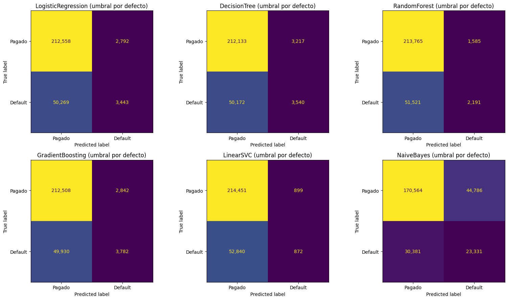
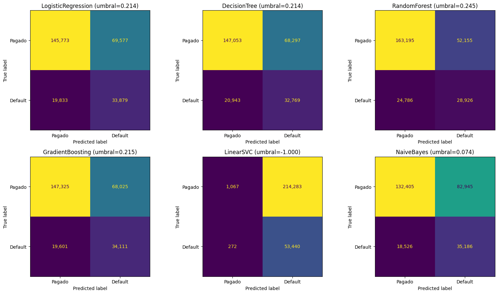
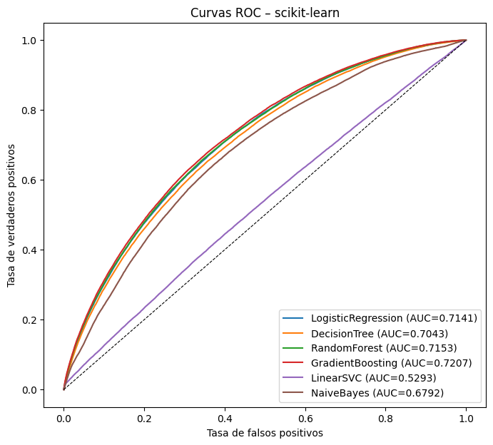
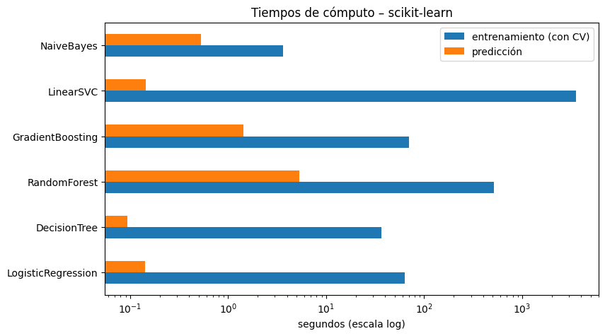

3. Modelado con scikit-learn#
Sección 4.2 del enunciado: seis modelos, GridSearchCV sin Pipeline con cv=3,
scoring="roc_auc" y n_jobs=-1, sobre los espacios de búsqueda de la sección 4.
Para cada modelo se miden los tiempos de entrenamiento (incluida la validación cruzada) y
de predicción, se calculan las métricas en test y se guardan las puntuaciones continuas
(id, default, score) para la prueba de DeLong.
import sys # Permite modificar la ruta de búsqueda de módulos
sys.path.insert(0, "..") # Agrega la raíz del proyecto
import time # Medición de tiempos con time.time()
import joblib # Guardado de los modelos ajustados (se usan en LIME)
import warnings # Control de advertencias
import numpy as np # Cálculo numérico
import pandas as pd # Manipulación de datos
import matplotlib.pyplot as plt # Gráficos
from sklearn.exceptions import ConvergenceWarning # Advertencia de convergencia de LinearSVC
from sklearn.model_selection import GridSearchCV # Búsqueda de hiperparámetros con validación cruzada
from sklearn.linear_model import LogisticRegression # Regresión logística
from sklearn.tree import DecisionTreeClassifier # Árbol de decisión
from sklearn.ensemble import RandomForestClassifier, GradientBoostingClassifier, HistGradientBoostingClassifier # Ensambles
from sklearn.svm import LinearSVC # SVM lineal
from sklearn.naive_bayes import GaussianNB # Naive Bayes gaussiano
from sklearn.metrics import roc_curve, ConfusionMatrixDisplay # Curva ROC y gráfico de matriz de confusión
from src import config as cfg # Configuración central
from src.pruebas import metricas, umbral_optimo_f1 # Métricas y umbral
from src.utilidades import guardar_json, guardar_figura, info_hardware # Utilidades
warnings.filterwarnings("ignore", category=ConvergenceWarning) # Se registra aparte el número de iteraciones de LinearSVC
hardware = info_hardware() # Información del equipo
hardware # Declaración del hardware (requisito de la sección 4.2)
{'sistema': 'Windows 10',
'procesador': 'AMD64 Family 25 Model 117 Stepping 2, AuthenticAMD',
'nucleos_fisicos': 6,
'nucleos_logicos': 12,
'ram_total_gb': 13.8,
'ram_disponible_gb': 6.2,
'python': '3.9.25'}
P = cfg.DIR_SKLEARN_PREP # Carpeta de los datos preprocesados
X_train, X_test = np.load(P / "X_train.npy"), np.load(P / "X_test.npy") # Matrices de características
y_train, y_test = np.load(P / "y_train.npy"), np.load(P / "y_test.npy") # Etiquetas
id_test = np.load(P / "id_test.npy") # Identificadores de test
n = X_train.shape[0] # Tamaño del conjunto de entrenamiento
print("X_train:", X_train.shape, "X_test:", X_test.shape) # Dimensiones
X_train: (1076248, 77) X_test: (269062, 77)
Equivalencia de la regularización#
PySpark pondera el promedio de las pérdidas y scikit-learn la suma; por eso
C = 1 / (regParam × n), con n = tamaño de train. La relación es aproximada.
C_valores = [cfg.c_desde_regparam(r, n) for r in cfg.REG_PARAMS] # C equivalente a cada regParam
pd.DataFrame({"regParam (PySpark)": cfg.REG_PARAMS, "C (scikit-learn)": C_valores}) # Tabla de equivalencias
| regParam (PySpark) | C (scikit-learn) | |
|---|---|---|
| 0 | 0.000001 | 0.929154 |
| 1 | 0.000010 | 0.092915 |
| 2 | 0.000100 | 0.009292 |
¿Es viable GradientBoostingClassifier con el dataset completo?#
Se mide el costo de ajustar solo 5 árboles de profundidad 5 sobre todo train y se extrapola al espacio de búsqueda completo (4 combinaciones × 3 pliegues + reajuste final).
inicio = time.time() # Marca de tiempo inicial
GradientBoostingClassifier(n_estimators=5, max_depth=5, learning_rate=0.1, random_state=cfg.SEMILLA).fit(X_train, y_train) # Ajuste de prueba
seg_por_arbol = (time.time() - inicio) / 5 # Segundos por árbol (profundidad 5, n completo)
arboles_cv = sum(it * 2 / 3 for it in cfg.GB_ITERACIONES for _ in cfg.GB_PROFUNDIDADES) * cfg.PLIEGUES_CV # Árboles de la CV (cada pliegue usa 2/3 de train)
arboles_refit = max(cfg.GB_ITERACIONES) # Árboles del reajuste final (peor caso)
estimacion_h = seg_por_arbol * (arboles_cv + arboles_refit) / 3600 # Horas-núcleo estimadas (cota superior: profundidad 5)
print(f"{seg_por_arbol:.1f} s por árbol → ≈ {estimacion_h:.1f} horas-núcleo para la búsqueda completa") # Reporte
8.4 s por árbol → ≈ 1.6 horas-núcleo para la búsqueda completa
Decisión: HistGradientBoostingClassifier en lugar de GradientBoostingClassifier#
Costo medido. GradientBoostingClassifier construye cada árbol evaluando todos los
cortes exactos de cada variable y no se paraleliza internamente. Con el dataset completo
cada árbol de profundidad 5 tardó ≈ 8,4 s, lo que equivale a ≈ 1,6 horas-núcleo para la
búsqueda completa. Además, el reajuste final (100 árboles en secuencia) no se puede
paralelizar y por sí solo tomaría ≈ 14 minutos, de modo que la búsqueda completa llevaría
≈ 23 minutos aun repartiendo la validación cruzada en 12 procesos. La alternativa con
histogramas resolvió toda la búsqueda (12 ajustes de validación cruzada + reajuste) en
≈ 71 s, unas 20 veces menos. Por ese costo desproporcionado, y como autoriza la sección 4.1
del enunciado, en scikit-learn se usa HistGradientBoostingClassifier. En PySpark se
mantiene GBTClassifier, tal como pide la tabla de modelos.
Qué tienen en común los tres algoritmos. Los tres son gradient boosting con árboles de regresión para la pérdida logística: parten de una predicción inicial y, en cada iteración, ajustan un árbol a la dirección de descenso de la pérdida y suman su salida multiplicada por la tasa de aprendizaje (0,1). El espacio de búsqueda es el mismo en todos: número de iteraciones ∈ {50, 100} y profundidad ∈ {3, 5}.
Diferencias algorítmicas.
Aspecto |
|
|
|
|---|---|---|---|
Búsqueda de cortes |
Exacta: ordena cada variable y evalúa todos los umbrales posibles |
Discretiza cada variable en ≤ 255 intervalos (cuantiles) y evalúa solo esos cortes |
Discretiza en ≤ |
Estadísticos por nodo |
Recorre las filas del nodo |
Histogramas de gradientes y hessianos por intervalo; el hijo mayor se obtiene restando el hermano al padre (truco de sustracción) |
Histogramas de estadísticas agregadas entre particiones |
Criterio de corte |
Reducción de error cuadrático (Friedman MSE) sobre los pseudo-residuos (1.er orden) |
Ganancia de segundo orden con gradiente y hessiano (como XGBoost/LightGBM) |
Reducción de varianza de los pseudo-residuos (1.er orden) |
Valor de cada hoja |
Paso de Newton: Σ residuos / Σ p(1 − p) |
Paso de Newton: −G / H |
Media de los pseudo-residuos (sin paso de Newton) |
Predicción inicial |
Log-odds de la tasa de default en train |
Log-odds de la tasa de default en train |
Primer árbol ajustado directamente a la etiqueta |
Crecimiento del árbol |
Nivel por nivel hasta |
Best-first limitado por hojas; aquí |
Nivel por nivel hasta |
Tamaño mínimo de hoja |
1 observación |
20 observaciones (valor por defecto) |
1 observación |
Parada temprana |
No (por defecto) |
Automática si n > 10.000; aquí se desactivó ( |
No |
Paralelismo |
Un solo hilo |
Multihilo (OpenMP) |
Distribuido entre tareas de Spark |
Nulos |
No los admite |
Los maneja de forma nativa (aquí ya estaban imputados) |
No los admite |
Consecuencias para la comparación.
Con 1,07 M de filas, 255 intervalos por variable apenas pierden precisión frente a los cortes exactos: los cortes candidatos quedan cada ≈ 0,4 percentiles. Las variables discretas (plazo, FICO, conteos) tienen menos de 255 valores distintos y conservan todos sus cortes. Por eso
HistGradientBoostingClassifieres una sustitución fiel, y en discretización se parece más aGBTClassifierque el propioGradientBoostingClassifier.La ganancia de segundo orden y el paso de Newton hacen que cada árbol avance más por iteración que en
GBTClassifier(primer orden). Con 100 iteraciones y tasa 0,1 esto podría favorecer a scikit-learn, pero el resultado final muestra el mismo AUC en ambos entornos (0,7207 vs 0,7208; DeLong p = 0,82): con este número de iteraciones ambos convergen a funciones prácticamente iguales.El mínimo de 20 observaciones por hoja actúa como una regularización leve: con 1,07 M de filas y profundidad ≤ 5 (a lo sumo 32 hojas por árbol) casi todas las hojas contienen miles de observaciones, así que la restricción solo puede afectar a hojas extremas y su efecto es despreciable.
Se desactiva la parada temprana para que ambos entornos usen exactamente el número de iteraciones de la malla, como exige la equivalencia de espacios de búsqueda.
Configuración usada: learning_rate=0.1, max_iter ∈ {50, 100} (equivale a
n_estimators), max_depth ∈ {3, 5}, max_leaf_nodes=None, early_stopping=False,
random_state=42.
modelos = { # Estimador base y espacio de búsqueda de cada modelo
"LogisticRegression": (LogisticRegression(penalty="l2", solver="lbfgs", max_iter=1000), # Regresión logística L2
{"C": C_valores}), # C equivalente a regParam ∈ {1e-6, 1e-5, 1e-4}
"DecisionTree": (DecisionTreeClassifier(random_state=cfg.SEMILLA), # Árbol de decisión (cortes exactos)
{"max_depth": cfg.PROFUNDIDADES_ARBOL}), # max_depth ∈ {5, 10, 15}
"RandomForest": (RandomForestClassifier(random_state=cfg.SEMILLA, n_jobs=1), # Bosque (el paralelismo lo da GridSearchCV)
{"n_estimators": cfg.RF_ARBOLES, "max_depth": cfg.RF_PROFUNDIDADES}), # 3 × 3 combinaciones
"GradientBoosting": (HistGradientBoostingClassifier(learning_rate=cfg.GB_TASA_APRENDIZAJE, max_leaf_nodes=None, # Boosting con histogramas
early_stopping=False, random_state=cfg.SEMILLA), # Sin parada temprana
{"max_iter": cfg.GB_ITERACIONES, "max_depth": cfg.GB_PROFUNDIDADES}), # 2 × 2 combinaciones
"LinearSVC": (LinearSVC(loss="hinge", dual=True, max_iter=5000, random_state=cfg.SEMILLA), # SVM lineal con pérdida hinge (como PySpark)
{"C": C_valores}), # Mismo criterio que la regresión logística
"NaiveBayes": (GaussianNB(), {}), # Sin búsqueda de hiperparámetros (configuración por defecto)
}
Entrenamiento con GridSearchCV#
Cada modelo se guarda en disco apenas termina. El umbral de decisión para McNemar y el F1 del bootstrap se elige solo con train: el que maximiza F1 sobre las puntuaciones de entrenamiento del mejor modelo.
resultados = {} # Métricas, tiempos e hiperparámetros por modelo
busquedas = {} # Objetos GridSearchCV ajustados
for nombre, (estimador, grid) in modelos.items(): # Recorre los seis modelos
print(f"→ {nombre} ...", flush=True) # Progreso
gs = GridSearchCV(estimador, grid, cv=cfg.PLIEGUES_CV, scoring="roc_auc", n_jobs=-1, refit=True) # Búsqueda con CV de 3 pliegues
t0 = time.time() # Inicio del entrenamiento
gs.fit(X_train, y_train) # Validación cruzada + reajuste del mejor modelo con todo train
t_entrenamiento = time.time() - t0 # Tiempo de entrenamiento (incluye la CV)
mejor = gs.best_estimator_ # Mejor modelo según AUC de validación
t0 = time.time() # Inicio de la predicción
pred = mejor.predict(X_test) # Clase predicha (umbral por defecto: 0.5 o 0)
score = mejor.decision_function(X_test) if nombre == "LinearSVC" else mejor.predict_proba(X_test)[:, 1] # Puntuación continua
t_prediccion = time.time() - t0 # Tiempo de predicción
score_train = mejor.decision_function(X_train) if nombre == "LinearSVC" else mejor.predict_proba(X_train)[:, 1] # Puntuación en train
umbral, f1_train = umbral_optimo_f1(y_train, score_train) # Umbral que maximiza F1 en train
m = metricas(y_test, pred, score) # Métricas de test con el umbral por defecto
m_umbral = metricas(y_test, (score >= umbral).astype(int), score) # Métricas de test con el umbral elegido en train
resultados[nombre] = { # Guarda todo lo relevante del modelo
"mejores_parametros": gs.best_params_, "auc_cv": gs.best_score_, # Hiperparámetros y AUC de validación
"tiempo_entrenamiento_s": t_entrenamiento, "tiempo_prediccion_s": t_prediccion, # Tiempos
"metricas": m, "umbral": umbral, "f1_train_umbral": f1_train, "metricas_umbral": m_umbral, # Métricas
"n_iter": int(np.max(mejor.n_iter_)) if hasattr(mejor, "n_iter_") else None, # Iteraciones (convergencia)
}
busquedas[nombre] = gs # Guarda la búsqueda
joblib.dump(mejor, cfg.DIR_MODELOS_SK / f"{nombre}.joblib") # Guarda el mejor modelo en disco
pd.DataFrame({cfg.COL_ID: id_test, cfg.COL_TARGET: y_test, "score": score}).to_parquet(cfg.DIR_SCORES_SK / f"{nombre}.parquet", index=False) # Puntuaciones de test
guardar_json({"hardware": hardware, "modelos": resultados}, cfg.RUTA_METRICAS_SK) # Guarda las métricas acumuladas
print(f" AUC test={m['roc_auc']:.4f} entrenamiento={t_entrenamiento:.1f}s predicción={t_prediccion:.2f}s {gs.best_params_}", flush=True) # Resumen
→ LogisticRegression ...
AUC test=0.7141 entrenamiento=63.3s predicción=0.14s {'C': 0.009291538753149831}
→ DecisionTree ...
AUC test=0.7043 entrenamiento=36.7s predicción=0.09s {'max_depth': 10}
→ RandomForest ...
AUC test=0.7153 entrenamiento=518.9s predicción=5.36s {'max_depth': 15, 'n_estimators': 100}
→ GradientBoosting ...
C:\Users\user-pc\.conda\envs\ml_venv\lib\site-packages\joblib\externals\loky\backend\context.py:136: UserWarning: Could not find the number of physical cores for the following reason:
[WinError 2] El sistema no puede encontrar el archivo especificado
Returning the number of logical cores instead. You can silence this warning by setting LOKY_MAX_CPU_COUNT to the number of cores you want to use.
warnings.warn(
File "C:\Users\user-pc\.conda\envs\ml_venv\lib\site-packages\joblib\externals\loky\backend\context.py", line 257, in _count_physical_cores
cpu_info = subprocess.run(
File "C:\Users\user-pc\.conda\envs\ml_venv\lib\subprocess.py", line 505, in run
with Popen(*popenargs, **kwargs) as process:
File "C:\Users\user-pc\.conda\envs\ml_venv\lib\subprocess.py", line 951, in __init__
self._execute_child(args, executable, preexec_fn, close_fds,
File "C:\Users\user-pc\.conda\envs\ml_venv\lib\subprocess.py", line 1436, in _execute_child
hp, ht, pid, tid = _winapi.CreateProcess(executable, args,
AUC test=0.7207 entrenamiento=70.6s predicción=1.44s {'max_depth': 5, 'max_iter': 100}
→ LinearSVC ...
AUC test=0.5293 entrenamiento=3549.4s predicción=0.15s {'C': 0.9291538753149833}
→ NaiveBayes ...
AUC test=0.6792 entrenamiento=3.6s predicción=0.53s {}
Resultados#
tabla = pd.DataFrame({n: {"AUC_cv": r["auc_cv"], **{k: v for k, v in r["metricas"].items() if k != "matriz_confusion"}, # Métricas por modelo
"F1_umbral_train": r["metricas_umbral"]["f1"], "umbral": r["umbral"], # F1 con umbral elegido en train
"t_entrenamiento_s": r["tiempo_entrenamiento_s"], "t_prediccion_s": r["tiempo_prediccion_s"], # Tiempos
"mejores_parametros": r["mejores_parametros"]} for n, r in resultados.items()}).T # Hiperparámetros
tabla # Muestra la tabla resumen
| AUC_cv | accuracy | precision | recall | f1 | roc_auc | F1_umbral_train | umbral | t_entrenamiento_s | t_prediccion_s | mejores_parametros | |
|---|---|---|---|---|---|---|---|---|---|---|---|
| LogisticRegression | 0.712038 | 0.802793 | 0.552205 | 0.064101 | 0.114868 | 0.714102 | 0.431118 | 0.214241 | 63.338732 | 0.141896 | {'C': 0.009291538753149831} |
| DecisionTree | 0.696019 | 0.801574 | 0.523901 | 0.065907 | 0.117085 | 0.704262 | 0.423432 | 0.21421 | 36.685204 | 0.093865 | {'max_depth': 10} |
| RandomForest | 0.711896 | 0.802625 | 0.580244 | 0.040792 | 0.076225 | 0.715276 | 0.429191 | 0.245074 | 518.896712 | 5.360159 | {'max_depth': 15, 'n_estimators': 100} |
| GradientBoosting | 0.716564 | 0.803867 | 0.570954 | 0.070413 | 0.125365 | 0.72073 | 0.437747 | 0.214676 | 70.615861 | 1.443551 | {'max_depth': 5, 'max_iter': 100} |
| LinearSVC | 0.547909 | 0.800273 | 0.492377 | 0.016235 | 0.031433 | 0.529334 | 0.332509 | -1.000005 | 3549.439369 | 0.14568 | {'C': 0.9291538753149833} |
| NaiveBayes | 0.67479 | 0.720633 | 0.342514 | 0.434372 | 0.383012 | 0.679154 | 0.409513 | 0.073886 | 3.636145 | 0.532384 | {} |
for nombre, gs in busquedas.items(): # Resultados completos de la validación cruzada
cv = pd.DataFrame(gs.cv_results_)[["params", "mean_test_score", "std_test_score", "mean_fit_time", "rank_test_score"]] # Columnas relevantes
print(f"\n{nombre}") # Nombre del modelo
display(cv.sort_values("rank_test_score")) # Tabla ordenada por ranking
LogisticRegression
| params | mean_test_score | std_test_score | mean_fit_time | rank_test_score | |
|---|---|---|---|---|---|
| 2 | {'C': 0.009291538753149831} | 0.712038 | 0.014141 | 37.533543 | 1 |
| 1 | {'C': 0.09291538753149832} | 0.711994 | 0.014202 | 36.742409 | 2 |
| 0 | {'C': 0.9291538753149833} | 0.709608 | 0.017381 | 33.689819 | 3 |
DecisionTree
| params | mean_test_score | std_test_score | mean_fit_time | rank_test_score | |
|---|---|---|---|---|---|
| 1 | {'max_depth': 10} | 0.696019 | 0.015977 | 17.284686 | 1 |
| 0 | {'max_depth': 5} | 0.692122 | 0.016827 | 10.428554 | 2 |
| 2 | {'max_depth': 15} | 0.663070 | 0.013500 | 21.557202 | 3 |
RandomForest
| params | mean_test_score | std_test_score | mean_fit_time | rank_test_score | |
|---|---|---|---|---|---|
| 8 | {'max_depth': 15, 'n_estimators': 100} | 0.711896 | 0.015262 | 193.019013 | 1 |
| 7 | {'max_depth': 15, 'n_estimators': 50} | 0.711075 | 0.015243 | 137.676603 | 2 |
| 5 | {'max_depth': 10, 'n_estimators': 100} | 0.708618 | 0.016381 | 215.135648 | 3 |
| 4 | {'max_depth': 10, 'n_estimators': 50} | 0.708513 | 0.016590 | 125.316636 | 4 |
| 3 | {'max_depth': 10, 'n_estimators': 10} | 0.706434 | 0.016358 | 25.412590 | 5 |
| 6 | {'max_depth': 15, 'n_estimators': 10} | 0.704050 | 0.014812 | 34.895898 | 6 |
| 1 | {'max_depth': 5, 'n_estimators': 50} | 0.703400 | 0.017865 | 68.087724 | 7 |
| 2 | {'max_depth': 5, 'n_estimators': 100} | 0.703256 | 0.017649 | 135.606541 | 8 |
| 0 | {'max_depth': 5, 'n_estimators': 10} | 0.700741 | 0.017284 | 14.149941 | 9 |
GradientBoosting
| params | mean_test_score | std_test_score | mean_fit_time | rank_test_score | |
|---|---|---|---|---|---|
| 3 | {'max_depth': 5, 'max_iter': 100} | 0.716564 | 0.014330 | 49.812308 | 1 |
| 2 | {'max_depth': 5, 'max_iter': 50} | 0.713188 | 0.015242 | 34.219646 | 2 |
| 1 | {'max_depth': 3, 'max_iter': 100} | 0.712544 | 0.015671 | 43.722747 | 3 |
| 0 | {'max_depth': 3, 'max_iter': 50} | 0.708290 | 0.016774 | 27.120324 | 4 |
LinearSVC
| params | mean_test_score | std_test_score | mean_fit_time | rank_test_score | |
|---|---|---|---|---|---|
| 0 | {'C': 0.9291538753149833} | 0.547909 | 0.033209 | 1521.492888 | 1 |
| 2 | {'C': 0.009291538753149831} | 0.508431 | 0.016134 | 37.765254 | 2 |
| 1 | {'C': 0.09291538753149832} | 0.482249 | 0.005395 | 276.069923 | 3 |
NaiveBayes
| params | mean_test_score | std_test_score | mean_fit_time | rank_test_score | |
|---|---|---|---|---|---|
| 0 | {} | 0.67479 | 0.017411 | 0.625058 | 1 |
fig, axes = plt.subplots(2, 3, figsize=(16, 9)) # Una matriz de confusión por modelo
for ax, (nombre, r) in zip(axes.ravel(), resultados.items()): # Recorre los modelos
ConfusionMatrixDisplay(np.array(r["metricas"]["matriz_confusion"]), display_labels=["Pagado", "Default"]).plot(ax=ax, colorbar=False, values_format=",") # Dibuja la matriz
ax.set_title(f"{nombre} (umbral por defecto)") # Título
fig.tight_layout() # Ajusta márgenes
guardar_figura(fig, "03_matrices_confusion_sklearn") # Exporta la figura
plt.show() # Muestra la figura

fig, axes = plt.subplots(2, 3, figsize=(16, 9)) # Matrices de confusión con el umbral elegido en train
for ax, (nombre, r) in zip(axes.ravel(), resultados.items()): # Recorre los modelos
ConfusionMatrixDisplay(np.array(r["metricas_umbral"]["matriz_confusion"]), display_labels=["Pagado", "Default"]).plot(ax=ax, colorbar=False, values_format=",") # Dibuja la matriz
ax.set_title(f"{nombre} (umbral={r['umbral']:.3f})") # Título con el umbral
fig.tight_layout() # Ajusta márgenes
plt.show() # Muestra la figura

fig, ax = plt.subplots(figsize=(8, 7)) # Curvas ROC de los seis modelos
for nombre in cfg.NOMBRES_MODELOS: # Recorre los modelos en el orden canónico
s = pd.read_parquet(cfg.DIR_SCORES_SK / f"{nombre}.parquet") # Lee las puntuaciones guardadas
fpr, tpr, _ = roc_curve(s[cfg.COL_TARGET], s["score"]) # Calcula la curva ROC
ax.plot(fpr, tpr, label=f"{nombre} (AUC={resultados[nombre]['metricas']['roc_auc']:.4f})") # Dibuja la curva
ax.plot([0, 1], [0, 1], "k--", lw=0.8) # Diagonal de referencia (azar)
ax.set_xlabel("Tasa de falsos positivos"); ax.set_ylabel("Tasa de verdaderos positivos") # Ejes
ax.set_title("Curvas ROC – scikit-learn"); ax.legend(loc="lower right") # Título y leyenda
guardar_figura(fig, "03_roc_sklearn") # Exporta la figura
plt.show() # Muestra la figura

tiempos = pd.DataFrame({n: {"entrenamiento (con CV)": r["tiempo_entrenamiento_s"], "predicción": r["tiempo_prediccion_s"]} for n, r in resultados.items()}).T # Tiempos por modelo
ax = tiempos.plot.barh(figsize=(9, 5), logx=True) # Barras en escala logarítmica
ax.set_xlabel("segundos (escala log)"); ax.set_title("Tiempos de cómputo – scikit-learn") # Ejes y título
plt.show() # Muestra la figura
tiempos # Tabla de tiempos

| entrenamiento (con CV) | predicción | |
|---|---|---|
| LogisticRegression | 63.338732 | 0.141896 |
| DecisionTree | 36.685204 | 0.093865 |
| RandomForest | 518.896712 | 5.360159 |
| GradientBoosting | 70.615861 | 1.443551 |
| LinearSVC | 3549.439369 | 0.145680 |
| NaiveBayes | 3.636145 | 0.532384 |
Interpretación de los resultados de scikit-learn#
Capacidad discriminante (AUC en test). El mejor modelo es gradient boosting
(HistGradientBoostingClassifier, 100 iteraciones, profundidad 5): AUC = 0,7207. Le siguen el
bosque aleatorio (0,7153), la regresión logística (0,7141), el árbol de decisión (0,7043),
Naive Bayes (0,6792) y, muy por detrás, LinearSVC (0,5293). Los AUC de validación cruzada son
muy parecidos a los de test (p. ej., 0,7166 vs 0,7207 en boosting), así que no hay señales de
sobreajuste en la selección de hiperparámetros.
Hiperparámetros. El bosque y el boosting eligen el extremo superior de la malla (100 árboles, profundidad 15; 100 iteraciones, profundidad 5): con 1,07 M de filas, modelos más complejos todavía mejoran, por lo que una malla más amplia podría ganar algo de AUC. El árbol de decisión muestra el sobreajuste clásico: profundidad 10 (0,696 en CV) supera a 15 (0,663). En la regresión logística la regularización casi no importa (0,7096–0,7120 en CV): con un millón de filas y 77 variables el término de penalización es despreciable.
Métricas con el umbral por defecto (0,5). La accuracy (≈ 0,80) apenas iguala a un modelo trivial que siempre predice «pagado», y el recall es de solo 4–7 %: con un 20 % de defaults, pocas probabilidades superan 0,5. Naive Bayes es la excepción (recall 0,43, accuracy 0,72) porque sus probabilidades están mal calibradas (supone independencia y exagera la confianza). Con el umbral que maximiza F1 en train (≈ 0,21), el F1 en test sube a 0,42–0,44 y el recall a ≈ 0,63 en todos los modelos útiles: el umbral importa tanto como el algoritmo.
LinearSVC. Su AUC (0,53 en test; 0,548 ± 0,033 en CV) es apenas mejor que el azar y muy
inestable entre pliegues. No es un problema de convergencia (en una prueba con 100 mil filas el
solucionador convergió en 371 iteraciones con el mismo AUC ≈ 0,48). La causa es la combinación de
la pérdida hinge con un 20 % de positivos muy solapados con los negativos: la solución óptima
está cerca de «clasificar todo como pagado» y el margen resultante casi no ordena el riesgo.
Además, liblinear penaliza también el intercepto (lo trata como una variable más), lo que
restringe precisamente el término que absorbe el desbalance. El umbral elegido en train (−1)
confirma la degeneración: para maximizar F1 hay que marcar casi todo como default (recall 0,99).
PySpark, que no penaliza el intercepto, obtiene 0,68 con el mismo modelo (notebook 04).
Tiempos. LinearSVC domina el costo (≈ 59 min, por el solucionador dual de un solo hilo con C ≈ 0,93), seguido del bosque aleatorio (519 s). Los demás modelos, incluida la búsqueda de gradient boosting, tardan menos de 75 s con los 12 hilos del equipo.